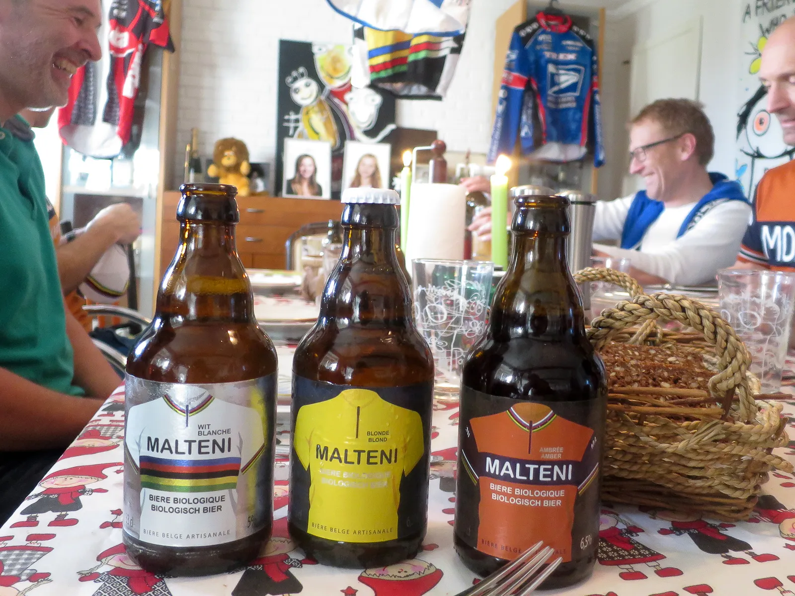
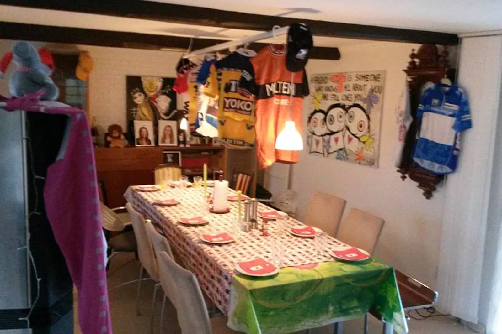
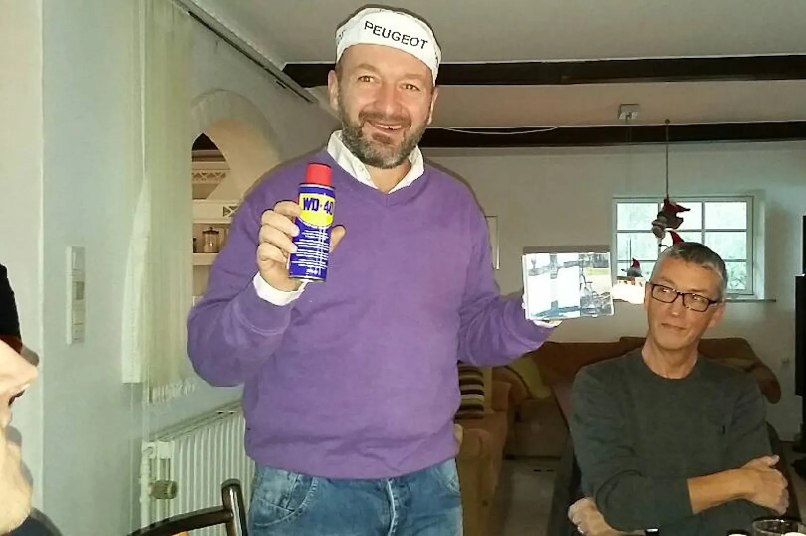
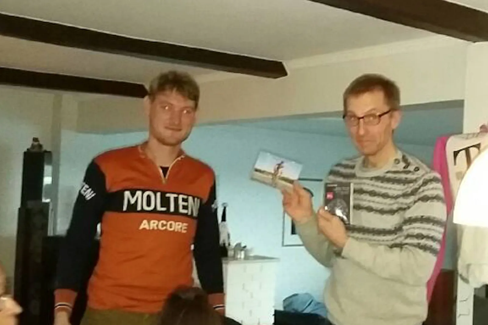
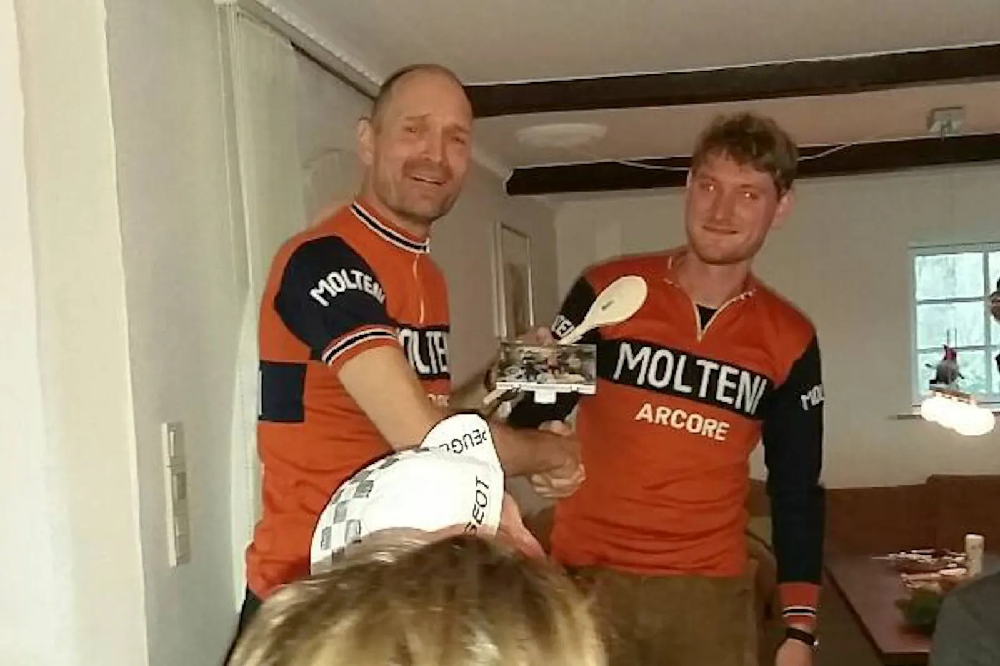

Årets julefrokost: Det var en våd og stormfuld aften

Squadra Molteni og Team Peugeot Re-Cycled var i weekenden samlet til en sidste fællestræning med efterfølgende julefrokost (se videoen i bunden af artiklen).
Vand og vindstød piskede om kap i indkørslen hos Peter Meinert, som havde tilbudt værtskab til årets sidste rulletur og frokost.
Et par biler og et brugt Veloflex dæk lå og flød i indkørslen. Historien om dækket skulle vi få senere.

Pyntet med Peter Meinert’s gamle cykeltrøjer
Syv ryttere havde trodset vejret, og havde sat sig på cyklen en times tid tidligere.
Kasper Sørensen og Team Peugeot’s Morten Mejsen, havde meldt fra på den del, og gik i øllene – Host host – i køkkenet.
Morten og Kasper lukkede sig selv ind til et mix af jul og cykelnostalgi, som Peter selv kaldte det.
Der var dækket og pyntet med trøjer og hatte fra karrieren.
Tidlige, og sene, TVM trøjer, Telekom trøjen, Team Fakta og US Postal trøjer og hatte.

Det perfekte udgangspunkt for et par sjove anekdoter og samtaler.
Årets Eugene Christoph
Årets Christophe Morten fik i år prisen som “Årets Christophe”.

En pris opkaldt efter den franske Tour-helt Eugene Christophe, hvis uheld konstant hindrede ham i at vinde Touren.
Tre gange i hans lange lange karriere knækkede forgaflen på hans Peugeot racer.
Den mest kendte episode er fra Tourmalet i 1913, men det skete også i 1919 på brostenene og i 1922 på Galibier.
I lighed skulle der også gå en hel sæson, før Morten gennemførte et løb på hans Peugeot – det sidste løb i sæsonen vel at mærke.
På årets Kongeetape i august mødte Squadra Molteni ham på toppen af Blue Horse-stigningen i Vejle: Trækkende med cyklen i højre hånd, og kæden i venstre.
Han måtte udgå – igen.
Inden længe kom feltet med resten af Squadra Molteni og Team Peugoet tilbage fra deres våde og blæsende tur.
Historien om dækket
Julefrokost akkompagneret af specialimporterede belgiske øl, og historien om det efterladte Veloflex dæk.
Holdets Eigil “Delgado” Leegard var mødt op på Veloflex dæk – uden indlæg (og uden skærme).
Til en regnfuld vintertræning!? Under påskud af at have kørt hele sæsonen uden en eneste punktering, kørte han ud på lidt opvarmning.
Et par minutter senere, kom han trillende tilbage med en lidt flov mule, og et endnu flovere Veloflex dæk.
Slangen kom hurtigt ud og i igen.
Den samme slange! En holdkammerat pointerede det, og Eigil var nu den eneste der kunne holde varmen.
Årets Delgado
Eigil fik prisen som “Årets Delgado”.

En pris opkaldt efter Pedro Delgado der i 1989 kom som storfavorit til at vinde Tour de France, men han kom to minutter for sent til prologen.
Et tidstab nogen mener kostede ham Tour-sejren.
Han blev treer det år, efter Lemond og Fignon.
Nu kunne man tro at Eigil fik prisen for at forsinke holdet på årets sidste træningstur, men der ligger faktisk en hel anden historie til grund.
I juni kørte Squadra Molteni holdløb i Tilst.
Kort før start trillede Eigil igen ud på lidt opvarmning.
Da holdet stod på startrampen, var Eigil ingen steder at finde.
To minutter senere kom han spurtende i det røde felt.
Det lykkedes ham at komme op til gruppen, men han betalte prisen, og måtte afstå føringer i en stor del af løbet.
Han var selvskrevet til prisen.
Sild, røverhistorier og overraskelsen
Alt i mens sild og øl røg indenbords – og røverhistorierne flød – gik hoveddøren pludselig op, og ind trådte Squadra Molteni’s Torta Mama med en kæmpe chokoladekage!
Mens alle ryttere tabte underkæben, nogen ved synet af kagen, andre ved synet af kvindelige former, trak Peter Meinert på smilebåndet.
Han og Maria havde i smug aftalt den lille overraskelse under mottoet: “Ingen julefrokost uden kage”.
God stil!
Året Kannibal
Den sidste pris gik til “Årets Kannibal” på Squadra Molteni.

Med 18 løb i sæsonen, og syv podiepladser fordelt på landevej, holdløb, enkeltstart, cykelcross, bane og mtb – ja, podieplaceringer i alle discipliner! – gik prisen til Niels Bjørnsteen.
Ikke kun for det sportslige niveau, men lige så meget for ledelsen af holdet.
Han sørger for strukturen inden løbende, har det taktiske overblik under løbende, giver råd når han ser vores uerfarne fejl, og anerkender hjælpen efter løbende.
En ægte kannibal uden mæthedsfornemmelse! Da silden, risalamande og kagen var spist, øllene druknet og planen for den nye sæson lagt, trak holdene sig tilbage med stormen Gorm i ryggen.
Squadra Molteni siger tak for en god sæson, og ønsker alle en god december.